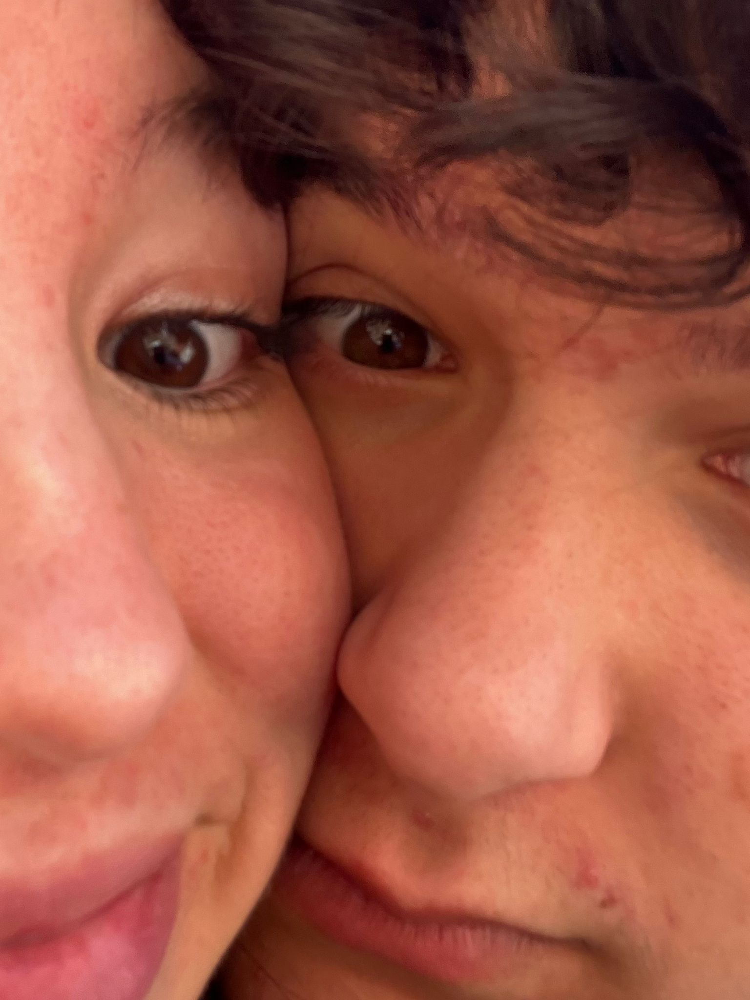
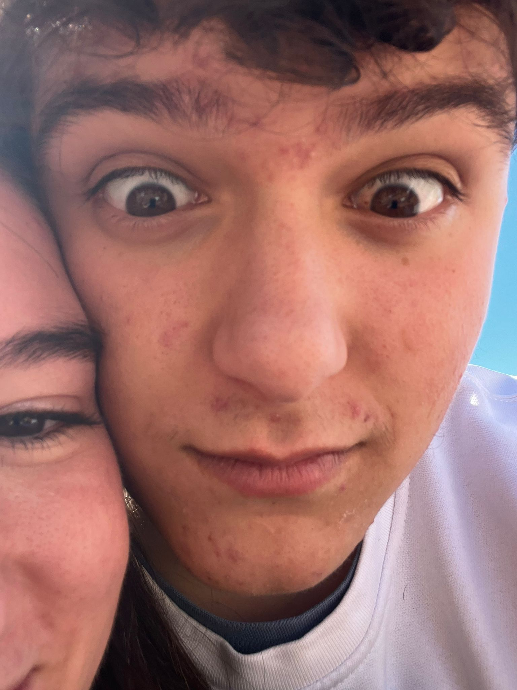

Esta pequeña página existe por una sola razón: recordarte lo mucho que te amo y lo importante que eres para mí.
Todo empezó de la forma más inesperada: en un grupo de WhatsApp que conocí por TikTok.
Era un grupo bastante random, con gente maja… aunque un poco rara, la verdad.
Poco a poco fui conociendo a todos, y un día añadieron a Ángela, tu mejor amiga.
Y poco después, llegaste tú.
Empezamos hablando sin ninguna intención especial. Yo venía de una ruptura reciente
y no pensaba conocer a nadie nuevo. Pero sin darme cuenta, nuestras conversaciones,
esas tardes hablando de todo y de nada, empezaron a significar mucho para mí.
Me dabas mucho en qué pensar… y cada día me gustabas un poquito más.
El día que quedamos por primera vez todo cambió. Verte, estar contigo y compartir
ese momento me hizo inmensamente feliz. Lo pasamos genial, y desde entonces
seguimos hablando, quedando y creando recuerdos preciosos juntos.
Todo ha sido bonito, natural y especial… hasta que llegó el 31 de enero,
el día en que te pedí salir y comenzó oficialmente nuestra historia.
Juntos, siendo nosotros.
Tu mirada que me calma.
Un recuerdo que siempre llevaré conmigo.
Amor mío, mi niña, Claudia:
No sé muy bien cómo explicar todo lo que siento por ti, pero quiero intentarlo.
Desde que llegaste a mi vida, todo se volvió un poco más bonito, un poco más ligero
y mucho más feliz.
Amo tus mejillas cuando sonríes, porque en ese momento siento que el mundo se detiene.
Amo tus ojos cuando se achinan al sonreír, porque ahí veo tu alegría más sincera.
Y amo tu forma de ser, tu alegría, esa manera tan tuya de iluminar cualquier lugar
solo con estar.
Contigo me siento en paz, me siento querido y me siento en casa.
Cada momento a tu lado es un recuerdo que quiero guardar para siempre.
Gracias por ser tú, por hacerme sentir así y por caminar conmigo.
Te quiero más de lo que estas palabras pueden decir.